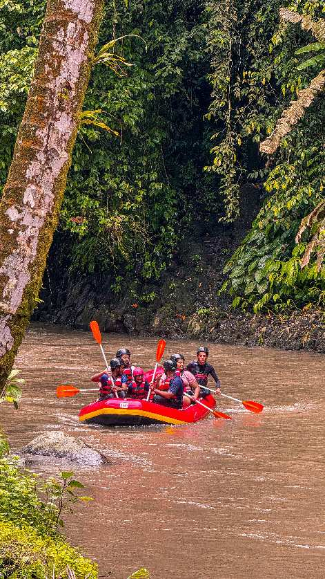

Our goal is to provide you with the best experience possible. We have been providing unforgettable experiences for over 30 years. We are a family owned and operated business dedicated to your safety and fun. Our team of experienced guides is committed to making every trip a memory you will keep.